The Food Library
2021
Multimedia Art, Speculative Design
–
Table of contents
4.0 Conclusion
1.0. Exhibit background
1.1. Intro
The Food Library (created by Gregory Cotton & Hershel Nashman) is an interactive exhibit spread across three rooms, immersing participants in a future world where food security and climate change are addressed by a new urban form: the edible city. Participants engage with elements of this speculative future, exploring audio, visual, and physical prototypes.
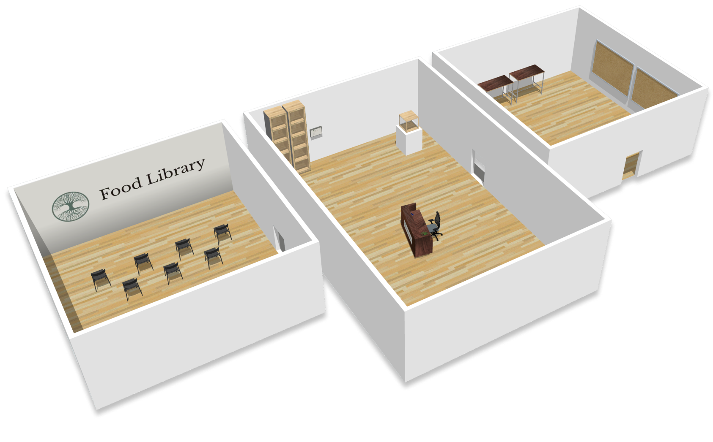
1.2. Exploring the problem space
The concept of the Food Library emerged while conducting some interviews with individuals – from academics studying climate change, agriculture and people-place connections to community garden members and permaculture farm workers. We talked to a variety of people to build a holistic understanding of the problem space. We went on to have some discussions with speculative designers, and engaged with community members to get thoughts on food security.
1.3. Research results
Through our research we established a list of key insights and created an in-depth systems map, which informed the direciton of this project.
Agriculture: Monoculture agriculture is resource intensive and perpetuates climate change.
Climate change: Current trends suggest that climate change will uproot global agricultural practices before the end of the century.
Urban farming: A lack of access to land, seeds, and knowledge can make urban farming challenging and inaccessible.
Community building: Local urban food production has the potential to, and has been proven to, cultivate community and a connection to the environment.
Food security: 1 in 8 households in Canada experience food insecurity.
Speculative design: Speculative design can be used as a tool for social dreaming while also critiquing the status quo.
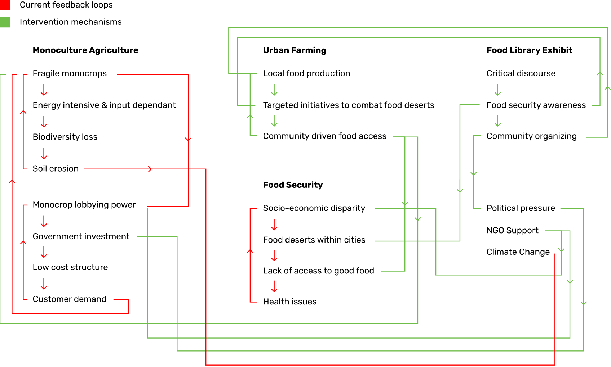
2.0. Making the Food Library
2.1. Prototype 3D renders
The Food Library contains numerous physical prototypes that required UX/UI design to be done for their screens.
As we were working during the COVID-19 pandemic, there was uncertainty around whether The Food Library was to be presented in person. This necessitated creating more detailed 3D mockups of the prototypes for the purpose of digital presentation. (Below: evolution of the ‘food scanner’ render, using Photoshop and Blender).
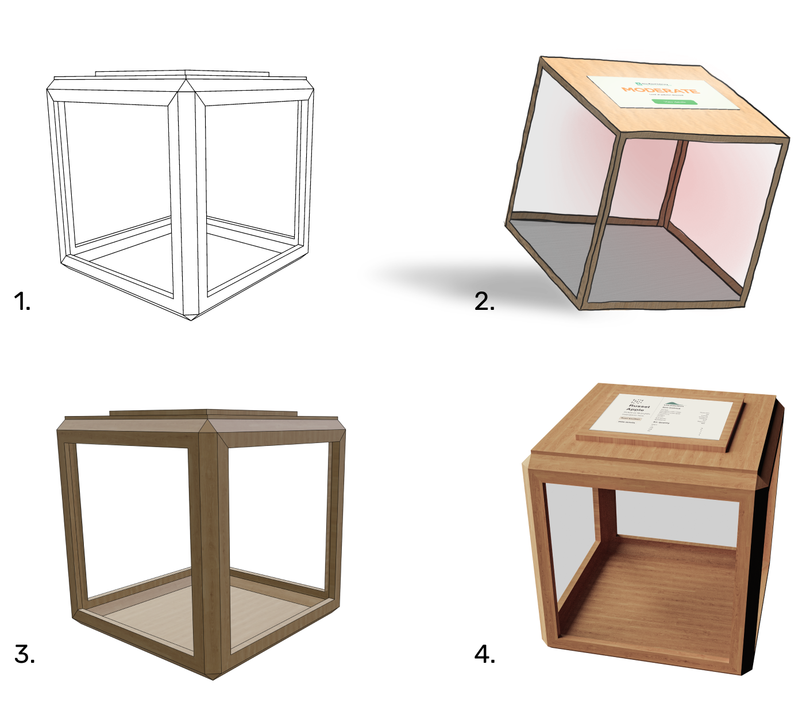
2.2. Interface design
There were interfaces to be designed for three physical prototypes – the food scanner, the preserves shelves, and the seed exchange.
Completed UI screens can be seen in Section 3.0 of the exhibit walkthrough.
2.3. Testing and revision
To see if the exhibit sparked the intended dialogue, we conducted a thought experiment mimicking the activity in the exhibit's third room, presented to subjects after engaging with a digital walkthrough of the exhibit.
The ability to create dialogue was something we were hoping to confirm during our user research, and were pleasantly surprised. A majority of our user research sessions resulted in longer conversations about food and environment between us and our participants, both in person and over messages.
Throughout our testing sessions the Food Library was seen as both a utopian and dystopian future by some: the overarching idea of food security for all was always well received, however ideas such as only eating food produced locally were called into question, and discussions were had about what that meant for foreign cultural dishes that relied on imports.
Participants also engaged in conversation with us about what ‘local food’ really means in an era where food has been modified to be resilient to climates where it does not naturally grow. We left our testing sessions recognizing some of the work we needed to do on the storyline, but simultaneously pleased with the quality of the conversations we were able to incite.
3.0. Exhibit walkthrough
3.1. Room one
The first room sets the stage for the rest of the exhibit, through a video telling the story of how this future world has come to be. A character named Owen, born in 2020, recounts his experiences growing up before, during, and after the creation of The Food Library in 2090. He speaks of the mishandling of climate and food crises through anecdotes and storytelling. Owen narrates throughout the whole exhibit, explaining the artifacts in the ensuing room.
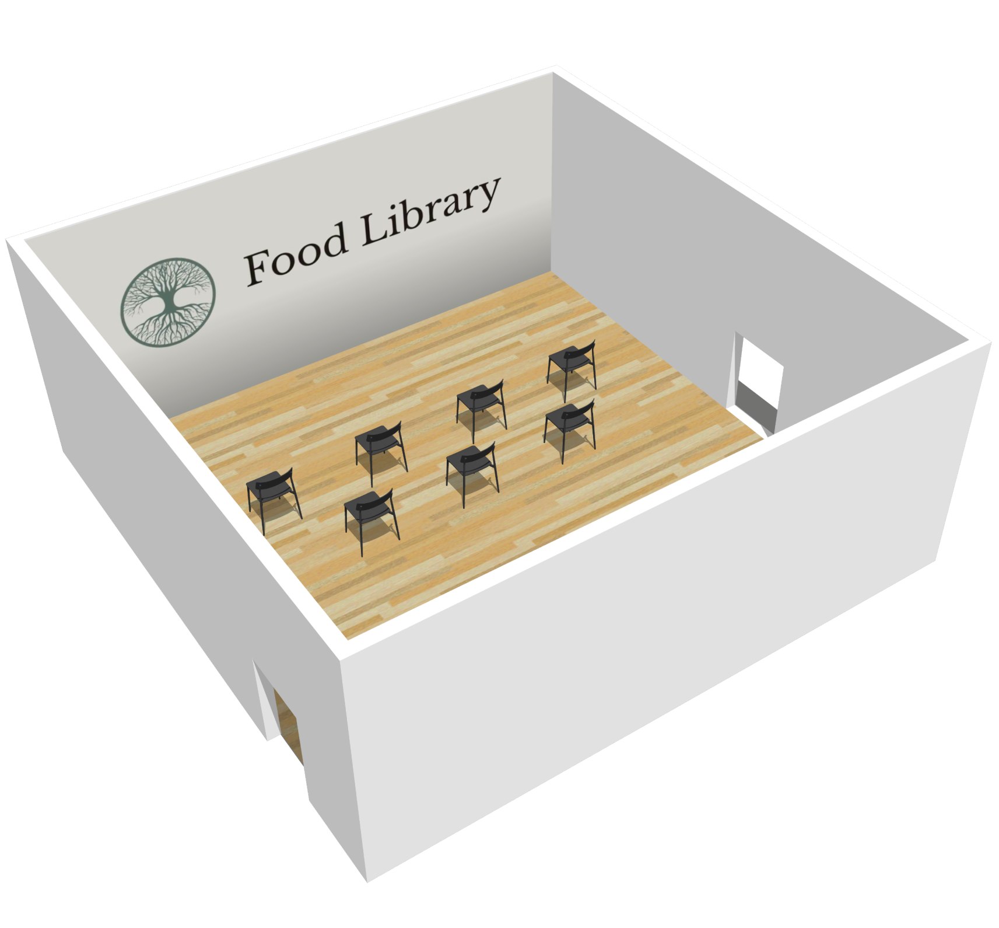
The first room provides context for the exhibit while the visitor establishes a connection to the future. Owen humanizes this future world, fostering empathy within the visitor. We’ve intentionally chosen to develop a character born in 2020, so the visitor can feel a strong sense of multi-generational connection. This future world timeframe is one that the visitor’s kids will likely experience, potentially the visitor themself.
3.2. Room two
The second room contains a series of diagetic prototypes the visitor can interact with. Each of these artifacts is from the Food Library, and are directly connected to various aspects of the research shown in the systems map and our current unsustainable food production practices. Interactive exhibit prototypes can also be found in Section 4.0.
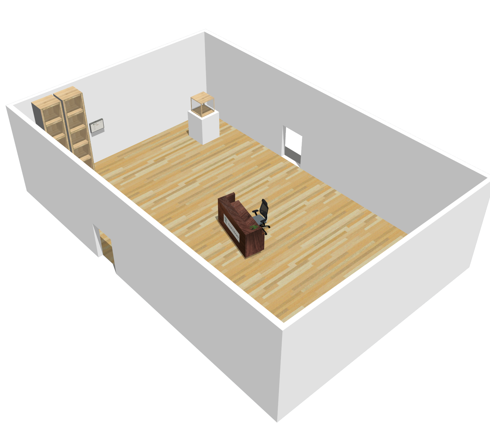
3.2.1. The food scanner
The food scanner is a piece of technology that can scan fresh produce and identify pollutant levels, pesticide residues and more broadly, whether the produce is safe for human consumption. Visitors are able to scan an item and see the results using a custom built user interface. The scanner has an integrated visual system to represent the act of scanning.
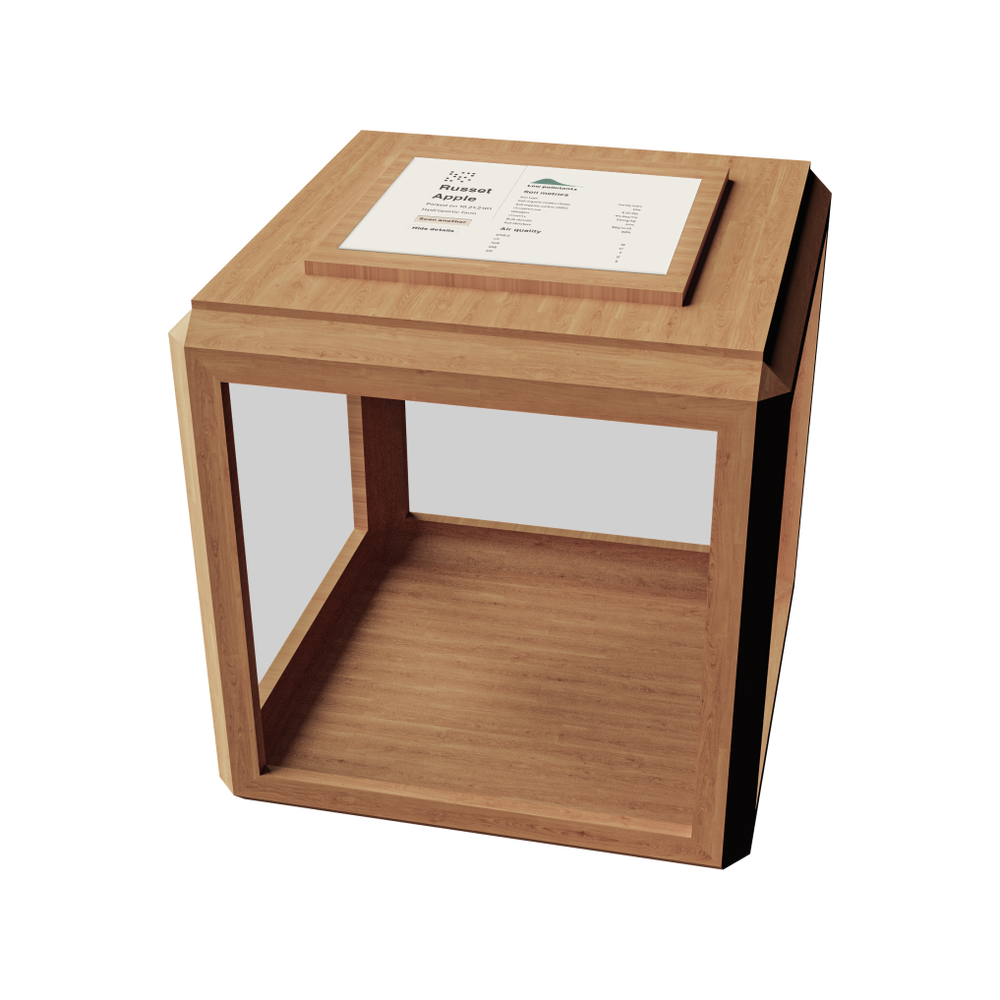
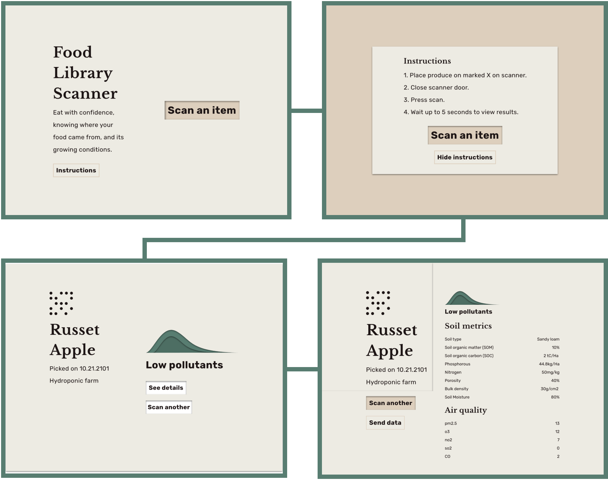
Didactic text from audio narration:
“The food scanner is still used today as a way to get more information about the produce that is grown. By simply scanning an item, all sorts of information can be determined about the soil and air quality during the growing period of the produce. You can see the exact farm where the produce was grown and what farming method was employed. People really care about what they are eating. The technology was developed long before the food library’s existence, but it was really only for the elites. Today, pollutants show up in our food that are from when I was a kid. If things keep going the way they are, hopefully we won’t need to check our food for pollutants anymore, as everything will be healthy to eat.”
3.2.2. Preserves shelves
The preserves shelves are lined with premade meals and preserves, sourced locally from community gardens, stored in standard mason jars. Next to the shelf is an electronic menu that displays a daily rotation of meals prepared by The Food Library. Visitors can engage with the user interface to see the meals available, who made them, and what ingredients were used. In addition, visitors can feel the mason jars which are custom labelled.
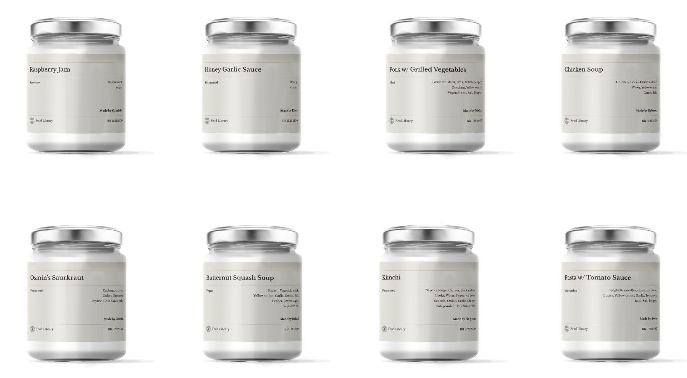
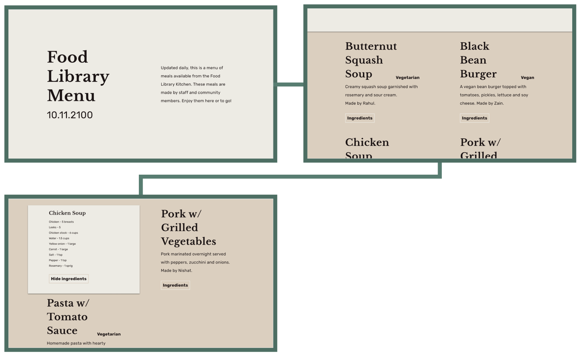
Seeing the lack of produce available in the future prompts visitors to reconsider current harmful systems that jeopardize global trade. Owen’s narration alludes to steps that could have been taken today that would result in more trade mobility in the future. The preserve shelves and menu comments on where we currently source our food from, the damaging of our environment, and the potential damaging of numerous cultures in Canada by means of inability to access certain produce, spices, and meats. While we may develop a strong connection to the food we’re eating locally, the food we’re eating locally starves cultures of their ability to access ingredients which cannot be grown on Canadian soil.
Didactic text from audio narration:
“Despite being in a terrible position, food security wise, just a couple decades ago, the city actually produces a surplus of food daily. So they need to preserve a lot of it to avoid waste. The local pre-prepared dishes on this shelf are all made with food sourced locally, from community gardens, local farms and edible forests. The Food Library has a team that uses community submitted recipes – which can all be viewed on the Food Library Website – to create dishes with these foods. I know they also do courses in the kitchen for community members. I took one with my grandson when he was probably about five or six years old once, and learned how to make a pasta dish. These meals, like all else in the library, are of course free to the public to take. This concept was tricky to navigate at first, as we had some individuals stocking up, hoarding food, but over time, when people realized there would be an abundant amount of food at all times, people started taking food for just the day, sometimes a few days at a time, which was much more manageable. For me it’s been really nice to be able to have beautiful dinners with my family without having to spend the whole day cooking. “Despite being in a terrible position, food security wise, just a couple decades ago, the city actually produces a surplus of food daily. So they need to preserve a lot of it to avoid waste. The local pre-prepared dishes on this shelf are all made with food sourced locally, from community gardens, local farms and edible forests. The Food Library has a team that usescommunity submitted recipes – which can all be viewed on the Food Library Website – to create dishes with these foods. I know they also do courses in the kitchen for community members. I took one with my grandson when he was probably about five or six years old once, and learned how to make a pasta dish. These meals, like all else in the library, are of course free to the public to take. This concept was tricky to navigate at first, as we had some individuals stocking up, hoarding food, but over time, when people realized there would be an abundant amount of food at all times, people started taking food for just the day, sometimes a few days at a time, which was much more manageable. For me it’s been really nice to be able to have beautiful dinners with my family without having to spend the whole day cooking.”
The seed exchange
The seed exchange is a cabinet with small drawers, each of which contain a specific type of seed local to the area. There is a tray of small paper bags on top of the cabinet, to bring the seeds home. Next to the cabinet is a computer called the “seed database”. Visitors can search for seeds using a unique ID number, or by name. The database displays information such as: interplanting suggestions, pest management, and general growing tips.
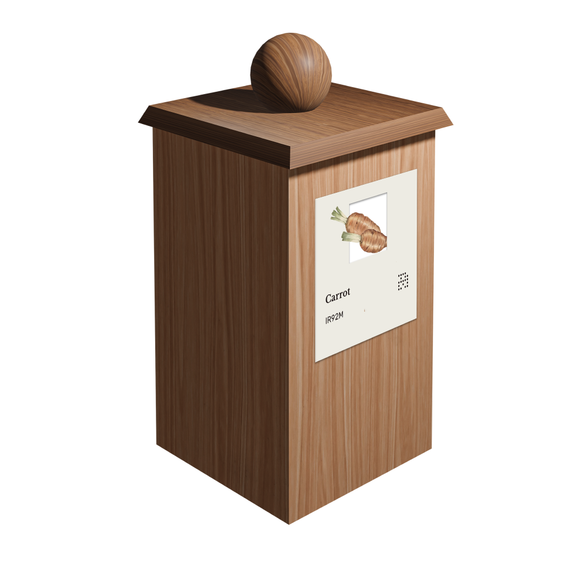
The seed exchange cabinet illustrates how limited the options for produce are, when relying solely on non invasive plants and local farming. The database will show the interconnectedness of different components of our ecosystems including plants, animals, insects, and humans. Looking through the different seed entries, visitors see in a simplistic way how the crops they grow have a direct impact on local biodiversity, and how monoculture can be detrimental to future sustainability. Visitors will reflect on the current resource driven mindset there is towards the natural world and how it differs from biocentrism.
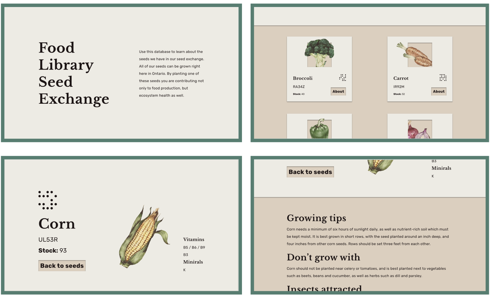
Didactic text from audio narration:
“I remember first taking my grandson to the Food Library and he ran over to one of these seed exchanges and was just captivated by all the dierent vegetables he could grow. I think he ended up picking some seeds for tomatoes, cherry tomatoes actually, to grow himself. He got so excited we didn’t even get to use the database, but if you’re more patient than a seven year old child you can take the time to plug in the seed to this interface and it will show you all sorts of details and neat tricks for growing whatever seed you’ve picked. Anyone can bring or take seeds from here, there’s no payment or requirement or whatnot. The seed exchange here only has seeds that can grow naturally in our area: invasive species used to harm biodiversity so now we have to be more mindful about what we choose to plant, you know? We’ve come to understand the interconnectedness of plants. As much as we have a relationship with plants, they have a relationship with each other and provide for their ecosystem, so I think we’ve recognized the importance and responsibility we have in helping maintain that balance.”
3.3. Room three
The third room contains an activity to encourage visitors to feel a deep sense of connection to the future through a legacy stance. Above the desks, instructions prompt the visitor to imagine the future of food for themselves, and to realize that they have a hand in creating the world for the next generation. They can discuss, sketch, or note their thoughts, posting them to a cork board which fills one side of the wall. This evolving co-created installation is able to be engaged with by all visitors.
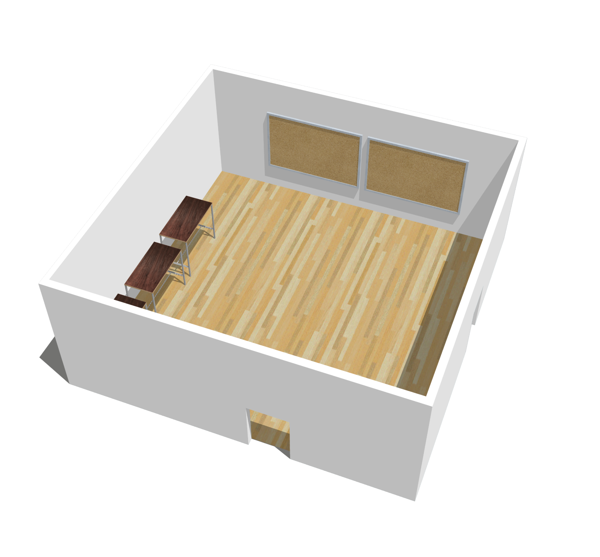
Didactic text from audio narration:
“Just as the world we were born into was created without us, we as citizens are the ones building the future that our descendants will grow up in. The future may be bright or dark, be what we imagine it to be, or completely unexpected. For a relative, friend, or fellow human this new world will be theirs, just as this is ours. Although daunting, this understanding is empowering. Our actions, decisions and mindsets today matter and have multigenerational consequences. If not the Food Library, what future do you envision?”
Take a few moments to discuss with others and draw or write down what the future of food looks like to you.
Add your response to the Food Library Community Discussion Board.
4.0. Conclusion
4.1. Additional materials
4.2. Credits
The Food Library was a project by Gregory Cotton and Hershel Nashman in response to the RSA Student Design Awards brief, 'For The Long Time', which encouraged individuals to think and act for the long term.